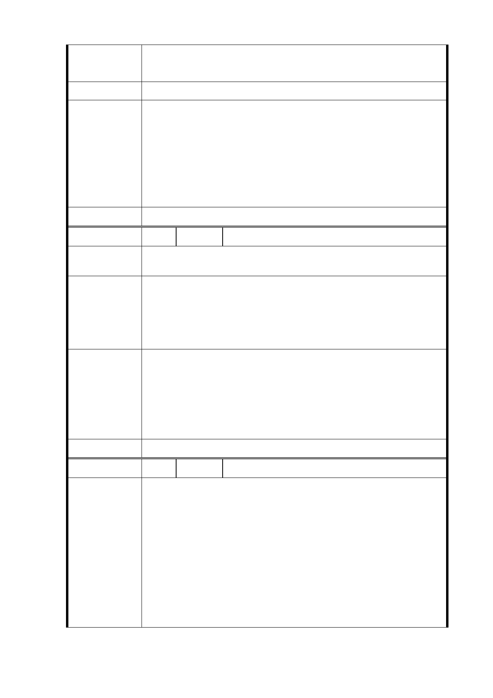

降低戶數，另園區內應設置獨立公園，不應只以開放空間取
代，這樣無法給予民眾完整活動空間。
建議辦法
一、 配合本府公共住宅興建策略，於考量地區發展條件及
公共設施容受力前提下，將原計畫商業區部分容積挪
市府回覆
意見
作公共住宅使用，適度提高公共住宅戶數，並透過設
計手法及界面處理，兼顧都市景觀、公共住宅品質及
地區生活環境。
二、 公共開放空間如編號 1。
委 員 會 決 議 同編號 1
編 號 7-1 陳情人 大仁里辦公處 蔡○清里長
陳情理由
一、 公營住宅戶數由2,800戶減半(廣慈博愛園區)。
二、 希望保留有一完整公園。
一、 廣慈園區係大仁里一半的土地，大仁里居民約 4,500
建議辦法
人，而開發園區將來超過 10,000 人，影響居民生活品
質及空間。
二、 居民渴望有一完整公園，不是零零碎碎空地。
一、 配合本府公共住宅興建策略，於考量地區發展條件及
公共設施容受力前提下，將原計畫商業區部分容積挪
市府回覆
作公共住宅使用，適度提高公共住宅戶數，並透過設
意 見 計手法及界面處理，兼顧都市景觀、公共住宅品質及
地區生活環境。
二、 公共開放空間如編號 1。
委 員 會 決 議 同編號 1
編 號 8 陳情人 鄭○介
建請勿於福德街84巷與林口街52巷交叉巷口設置汽機車停
車場出入口。
說明：
一、 依臺北市都發局104年5月11日「廣慈博愛園區之後續
陳情理由
處理」書面報告及104年6月2日「廣慈博愛園區整體開
發計畫」都市計畫公開展覽說明會模型，廣慈博愛特
區規劃設置3個停車場出入口，其中福德街84巷與林口
街52巷交叉巷口為其中之一。
二、 查福德街84巷向來為該區域居民往北出入忠孝東路五
段524巷，及往南出入福德街之重要通路，且僅為一般
- 14 -